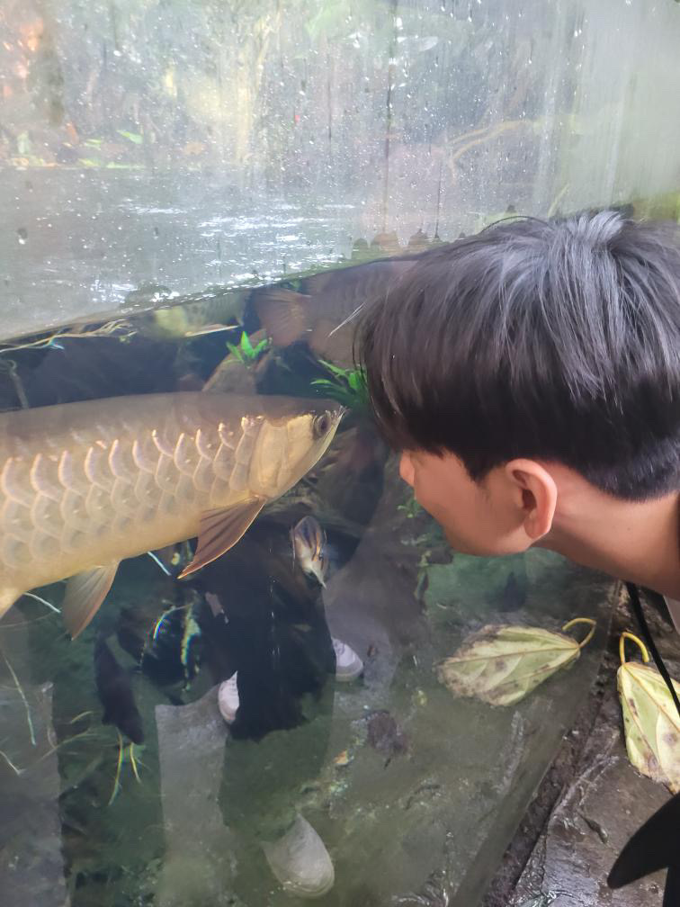
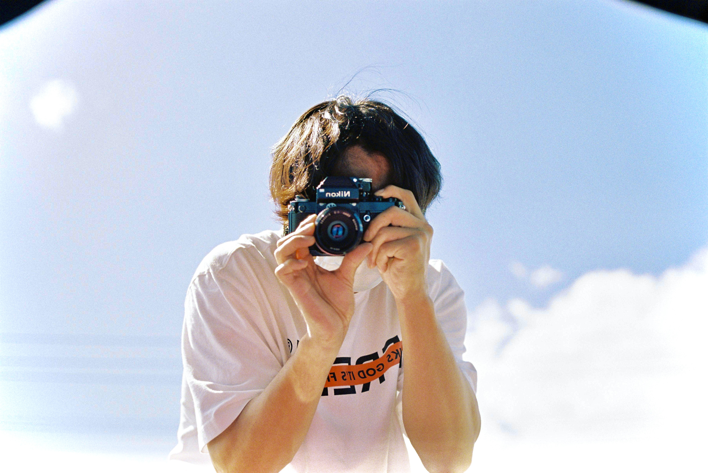
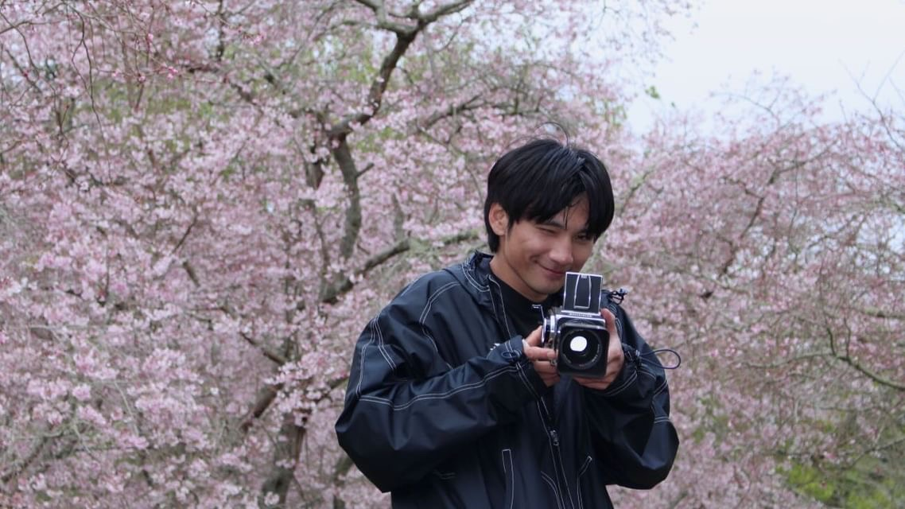
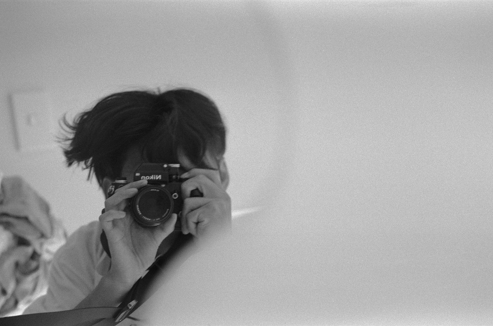
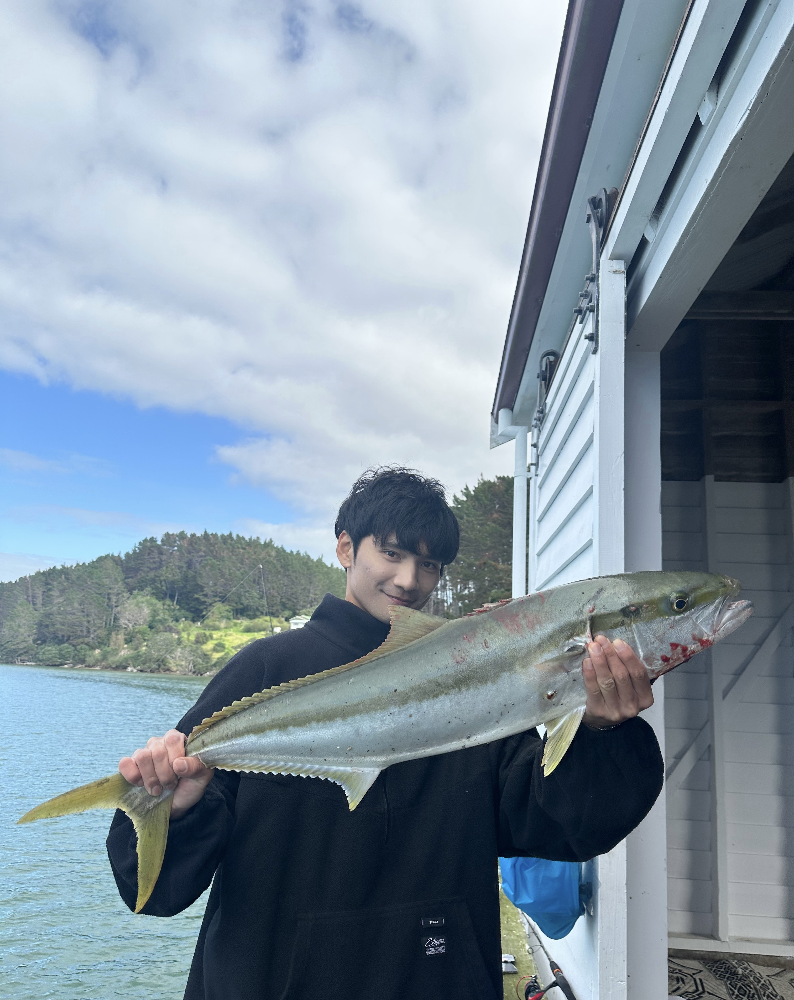
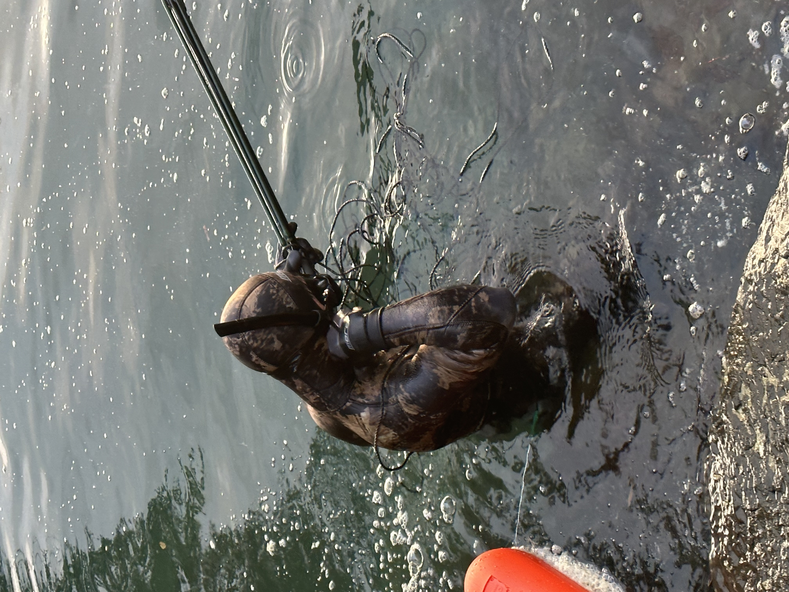
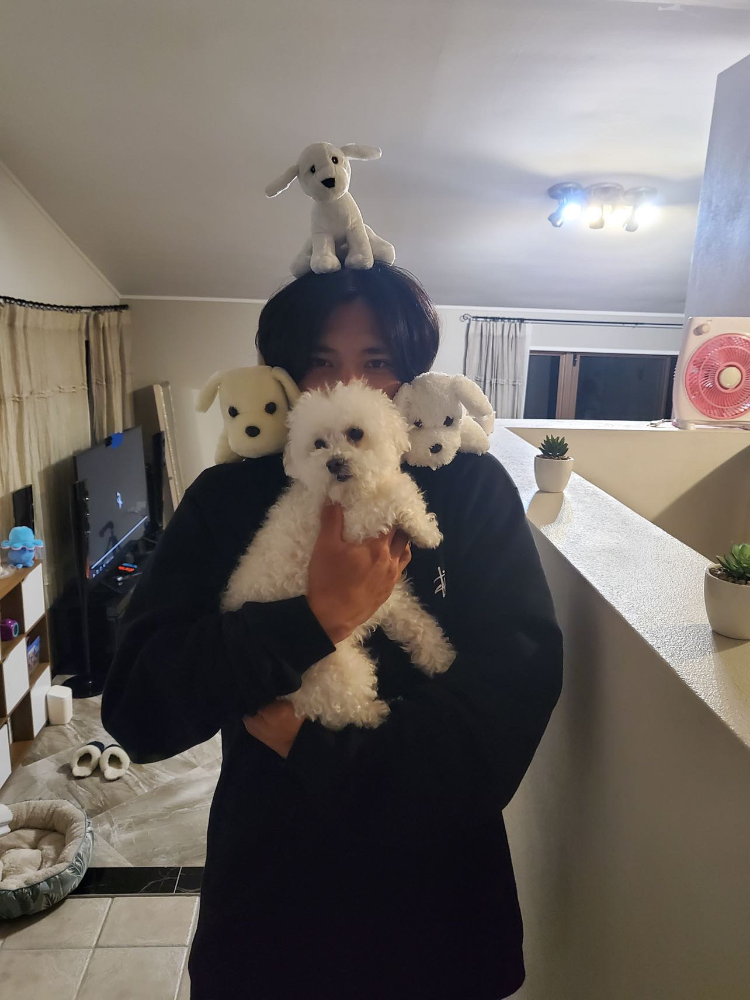

Sam Shin
Outside of design, I spend most of my time with my cameras, guitars and in the great outdoors. I love to dive deep into my hobbies.
I'm a serial tinkerer — be it a camera, a speargun or a styleframe, I tend to obsess over it until it looks and feels just right.